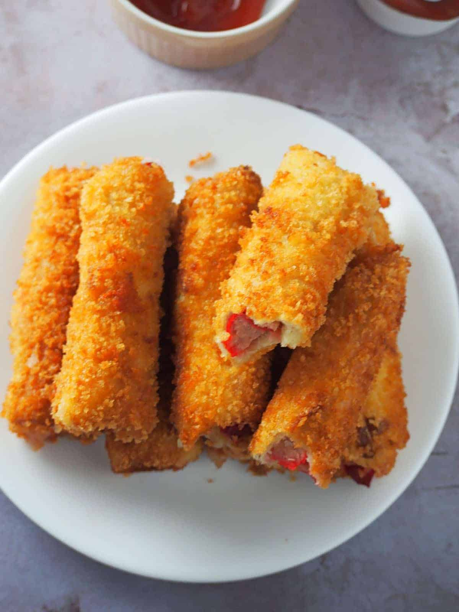
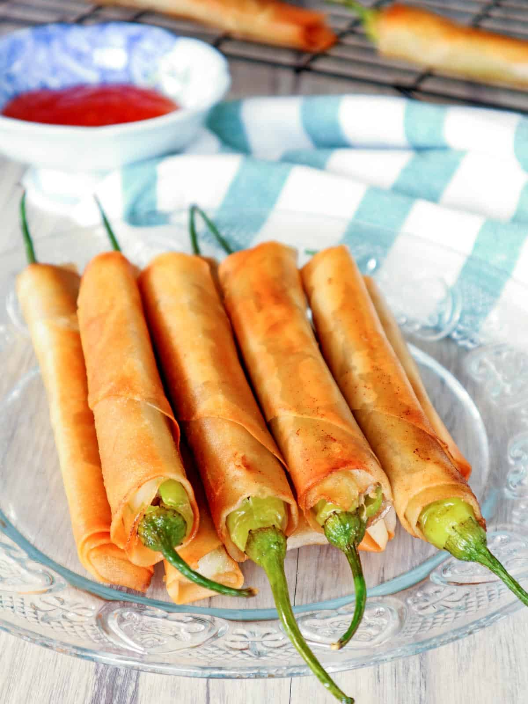
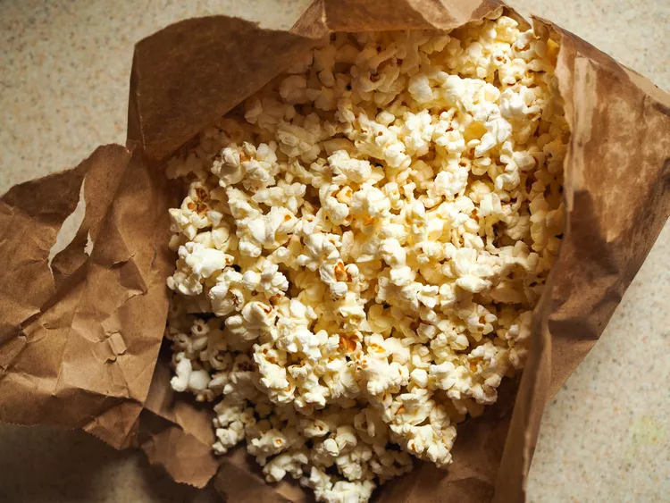
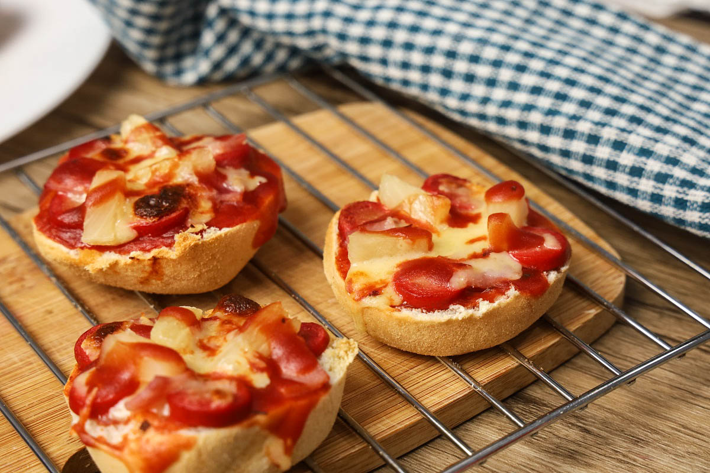
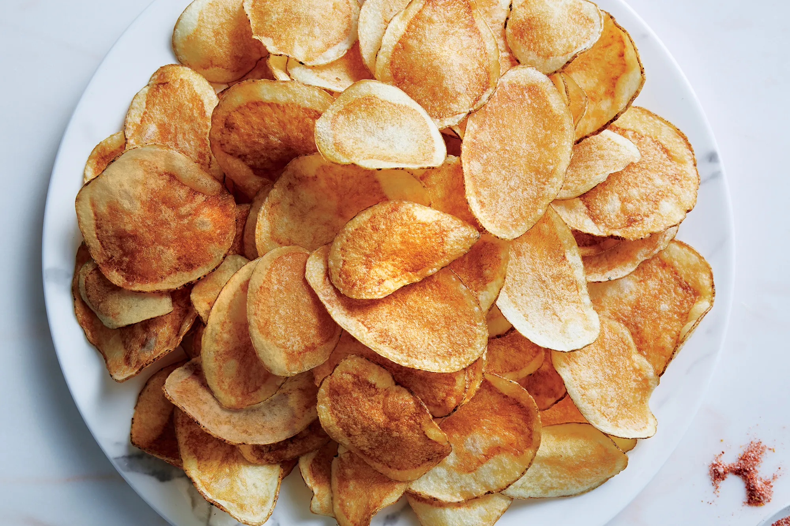

Cheese Dog Bread Rolls
Ingredients
- 12 slices white bread
- 3 hot dogs, cut into 4 strips
- 4 ounces quick melt cheese, cut into 24 thin strips
- 2 eggs
- ¼ cup milk
- 1 cup Panko bread crumbs
- Canola oil
How to Make
- Trim the edges of each slice of bread, then use a rolling pin to flatten them until very thin.
- Place a piece of hotdog and two strips of cheese at the edge of the bread closest to you, then roll the bread into a log to enclose the filling. Press the seams lightly to seal completely (or secure with toothpicks, which can be removed later). Repeat with the remaining bread slices.
- In a bowl, whisk together the eggs and milk until well combined.
- Place Panko bread crumbs in a shallow dish.
- Dip each bread roll into the egg mixture, then roll it in the bread crumbs, pressing down to ensure they are fully coated. Repeat with the remaining rolls.
- Arrange the breaded rolls in a single layer on a baking sheet and freeze for 3 to 5 minutes.
- In a wide, heavy-bottomed pan over medium heat, heat about 2 inches of oil. Place the prepared bread rolls seam side down and deep-fry, turning as necessary, until they are golden brown and crispy.
- Remove from the pan and drain on a wire rack over a baking sheet. Serve hot with ketchup for dipping.

Dynamite Lumpia
Ingredients
- 30 pieces finger chili peppers (siling haba)
- 1 pound ground pork
- 2 cloves garlic, peeled and minced
- ½ cup green onion, chopped
- 1 teaspoon salt
- ¼ teaspoon pepper
- 30 pieces spring roll wrappers
- Canola oil
How to Make
- Use a small knife to make a slit along one side of each chili pepper, from the stem to the tip, being careful to keep the stems intact.
- With a teaspoon, gently scrape out the seeds and pith from inside the chili peppers. Rinse them under cold running water to remove any stray seeds, then drain and pat dry.
- In a bowl, mix together ground pork, garlic, green onions, salt, and pepper to taste.
- Using a teaspoon, carefully stuff each chili pepper with the pork mixture.
- Separate the lumpia wrappers and lay them on a flat surface. Position the spring roll wrapper in a diamond shape.
- Fold the right pointed end of the wrapper inward, then place the stuffed chili pepper horizontally with the stem facing out.
- Fold the left and bottom sides over the chili pepper and roll tightly to fully enclose it. Dab water on the seam and gently press to seal completely.
- In a pan over medium heat, heat about 2 inches of oil. Add the wrapped peppers in a single layer and fry, turning as needed, for about 7 to 10 minutes or until golden brown and crispy, ensuring the meat is cooked through.
- Remove from the pan and let them drain on a wire rack over a baking sheet. Serve hot with sweet and sour sauce or a spicy vinegar dip.

Crispy Fried Mashed Potato Balls
Ingredients
- Mashed potato filling:
- Potatoes
- Cream cheese, room temperature
- Shredded cheddar cheese
- Salt
- Pepper
- Chili flakes
- Garlic powder
- All purpose flour
- Chopped fresh parsley
- Crispy coating:
- Crackers
- Bread crumbs
- Shredded parmesan cheese
- Chili flakes
- Cubed mozzarella cheese
- Eggs
- Oil
How to Make
- Peel and cube the potatoes, then boil them in a saucepan until tender but not mushy. Drain once cooked.
- In a bowl, mash the potatoes with a fork or masher, leaving some texture. Add cream cheese, cheddar cheese, salt, pepper, chili flakes, garlic powder, all-purpose flour, and chopped parsley. Mix well and adjust seasoning to taste.
- Crush the crackers and mix with parmesan and chili flakes.
- Scoop the potato mixture into a ball, flatten it, and place a cube of mozzarella in the center. Shape it back into a ball, ensuring the cheese is sealed inside. Arrange the balls on a parchment-lined tray and freeze for 30 minutes.
- Whisk the eggs in a large bowl. Dip each potato ball in the egg, coat with the crushed crackers, dip in the egg again, and coat with crackers once more. Return them to the tray.
- In a heavy skillet, heat 2 inches of vegetable oil to about 330°F. Fry the potato balls in two batches for 6-8 minutes each, until golden.

Microwave Brown Bag Popcorn
Ingredients
- 1/2 cup popcorn kernels
- 1/2 teaspoon canola or vegetable oil
- Kosher salt, to taste
How to Make
- In a small mixing bowl, combine popcorn kernels, oil, and salt, tossing until evenly coated.
- Transfer the kernels to a clean brown paper lunch bag. Fold the top over about 1.5 inches and then fold the corners diagonally. Cut small tabs in the center of each fold and tuck them down to keep the bag closed as the popcorn expands.
- Place the bag in the microwave and heat on high for about 2 minutes, keeping a close watch to prevent burning. Timing may vary by microwave, so aim to stop just before all kernels are popped. Serve and enjoy!

Spring Roll Cheese Sticks
Ingredients
- 1 pound Eden Cheese or quick melt cheese
- 12 pieces spring roll wrappers
- Canola Oil
How to Make
- Slice the cheese into thin, long strips, approximately ½ inch thick and 4 inches long.
- Separate the wrappers into individual sheets and arrange one on a flat surface in a diamond shape. Place the cheese in the center of the wrapper.
- Fold the bottom of the wrapper over the cheese, then bring the side edges inward and roll tightly into a log. Use a little water on the pointed end of the wrapper to seal it completely. Repeat with the remaining cheese and wrappers.
- In a large pan, heat about 1 inch of oil over medium heat. Add the spring rolls seam side down in batches and fry them for 1 to 2 minutes, turning occasionally, until they are golden brown and crispy.
- Remove the spring rolls from the pan and let them drain on a wire rack set over a baking sheet. Serve hot with sweet and sour sauce.
Corn Dog
Ingredients
- 3/4 cup yellow cornmeal
- 3/4 cup self-rising flour
- 1 large egg, room temperature, lightly beaten
- 2/3 cup 2% milk
- 10 pop sticks
- 10 hot dogs
- Oil for deep-fat frying
How to Make
- In a large bowl, mix together cornmeal, flour, and egg. Gradually stir in milk to create a thick batter, then let it sit for 4 minutes. Insert sticks into the hot dogs and dip them into the batter.
- In an electric skillet or deep fryer, heat oil to 375°F. Fry the corn dogs in batches until they are golden brown, about 6-8 minutes, turning them occasionally. Drain on paper towels.

Gardenia Pizza Pandesal
Ingredients
- 10 pcs Gardenia Pandesal (Halved)
- 1 pack (115 g) Pizza sauce
- 1 can Pineapple tidbits (small)
- 1 pc Bell pepper (big)
- 4 strips Bacon (cut into 1″ length)
- 1 pc White onion (big)
- 1 can Mushrooms (small)
- 1/8 tsp Ground black pepper
- 1 bar (225 g) Easy-melt cheese
How to Make
- Peel the onion and chop it into small pieces. Set aside.
- Slice the bell pepper, remove the seeds, and chop it into small pieces. Set aside.
- Spread pizza sauce on each slice of Gardenia Pandesal.
- Add toppings of pineapple, bell pepper, bacon, chopped onion, mushrooms, and cheese.
- Place in an oven toaster and heat for 3-5 minutes, or until the cheese is melted.

Chicken and Pepper Pitta Pizza
Ingredients
- 1 small red pepper, cut into quarters and deseeded
- 2 tbsp passata
- 2 tsp tomato purée
- 2 spring onions, finely chopped
- 1–2 tbsp shredded fresh basil leaves, plus extra to garnish
- Freshly ground black pepper, to taste
- 4 round picnic pittas (white or wholemeal, or a mixture), each about 10cm (4in) in diameter and 35g (1¼oz) in weight
- 55g (2oz) cooked skinless, boneless chicken breast, cut into thin strips
- 1 tomato, cut into 4 slices
- 55g (2oz) light mozzarella cheese (from a ball of light mozzarella), coarsely grated
How to Make
- Preheat the grill to high. Grill red pepper quarters for about 5 minutes until the skin is blackened. Remove from heat, cover with a damp towel, and let cool for 5 minutes. Once cool, peel off the skin and slice into strips.
- Meanwhile, preheat the oven to 180ºC/160ºC fan/gas mark 4. In a small bowl, mix passata, tomato purée, spring onions, shredded basil, and black pepper. Spread this over the smoother side of each pita. Top with chicken, red pepper strips, and tomato slices, then sprinkle with cheese. Place on a non-stick baking sheet.
- Bake for about 20 minutes until the pitas are hot and the cheese is melted and golden. Garnish with extra basil.

Potato Chips
Ingredients
- 4 russet potatoes, washed and dried
- ¼ cup olive oil
- 1 tablespoon coarse salt, or more to taste
- 1 tablespoon Old Bay seasoning (optional)
How to Make
- Preheat the broiler to its low setting. If your broiler isn’t adjustable or is very powerful, preheat the oven to 475°F instead. Set a roasting rack on a baking sheet.
- Using a mandoline or a sharp knife, slice the potatoes very thinly, about ⅛-inch thick. In a large bowl, toss the potato slices with olive oil, salt, and Old Bay seasoning, if desired.
- Arrange the potato slices on the roasting rack (you may need to work in batches to ensure they spread out and become crispy). Cook until the potatoes are crisp and golden brown, about 5 to 7 minutes. Repeat with the remaining slices. Allow them to cool completely and store in an airtight container for up to three days.